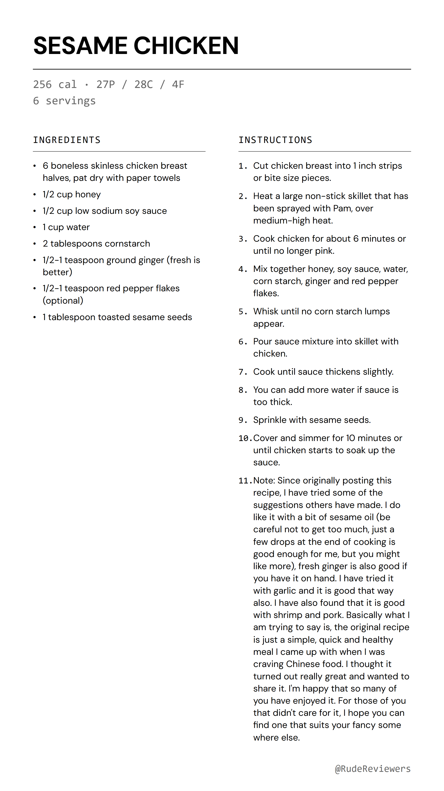

crispy sesame chicken that's actually high protein and low fat INGREDIENTS: - 6 boneless skinless chicken breast halves, pat dry with paper towels - 1/2 cup honey - 1/2 cup low sodium soy sauce - 1 cup water - 2 tablespoons cornstarch - 1/2-1 teaspoon ground ginger (fresh is better) - 1/2-1 teaspoon red pepper flakes (optional) - 1 tablespoon toasted sesame seeds INSTRUCTIONS: 1. Cut chicken breast into 1 inch strips or bite size pieces. 2. Heat a large non-stick skillet that has been sprayed with Pam, over medium-high heat. 3. Cook chicken for about 6 minutes or until no longer pink. 4. Mix together honey, soy sauce, water, corn starch, ginger and red pepper flakes. 5. Whisk until no corn starch lumps appear. 6. Pour sauce mixture into skillet with chicken. 7. Cook until sauce thickens slightly. 8. You can add more water if sauce is too thick. 9. Sprinkle with sesame seeds. 10. Cover and simmer for 10 minutes or until chicken starts to soak up the sauce. 11. Note: Since originally posting this recipe, I have tried some of the suggestions others have made. I do like it with a bit of sesame oil (be careful not to get too much, just a few drops at the end of cooking is good enough for me, but you might like more), fresh ginger is also good if you have it on hand. I have tried it with garlic and it is good that way also. I have also found that it is good with shrimp and pork. Basically what I am trying to say is, the original recipe is just a simple, quick and healthy meal I came up with when I was craving Chinese food. I thought it turned out really great and wanted to share it. I'm happy that so many of you have enjoyed it. For those of you that didn't care for it, I hope you can find one that suits your fancy some where else. Recipe by Jenny White via food.com #sesame #chicken #highprotein #easyrecipes #mealprep #recipe #weeknight
Long-press each photo → Save to Photos. Then open TikTok → Photo post.
